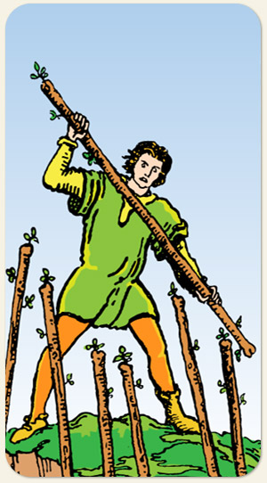

A resistência, a defesa de posição e a coragem sob pressão. O sucesso do Seis de Paus sendo desafiado por forças externas, indicando que é necessário sustentar o que foi conquistado. A vantagem estratégica, a integridade pessoalm a recusa em recuar, uma intensa atividade defensiva, onde a convicção individual é testada contra a vontade da maioria.
A força de acreditar do Sete mais bravura do Fogo. É o fogo da alma, superação de si mesmo, poder de resistência, acreditar na sua capacidade, ganhar musculatura energética.
Neste Arcano, o personagem segura o bastão em posição diagonal e os demais bastões encontram-se em posição vertical. No Arcano seguinte, o Oito de Paus mostra todos os bastões na posição diagonal, mostrando que o Sete conseguiu exercer a liderança sobre os demais bastões.
Positivo: A fé necessária para enfrentar os obstáculos, proteção espiritual, inspiração espiritual, pessoas que nos defendem.
Negativo: Agressividade para se proteger por medo, bloqueio, ter uma carapaça, pavio curto, atos de covardia, ataques energéticos.
Símbolos: Homem, Segurar com as Duas Mãos, Sapatos Diferentes, Céu Límpido.
Cores: Verde, Azul, Amarelo.